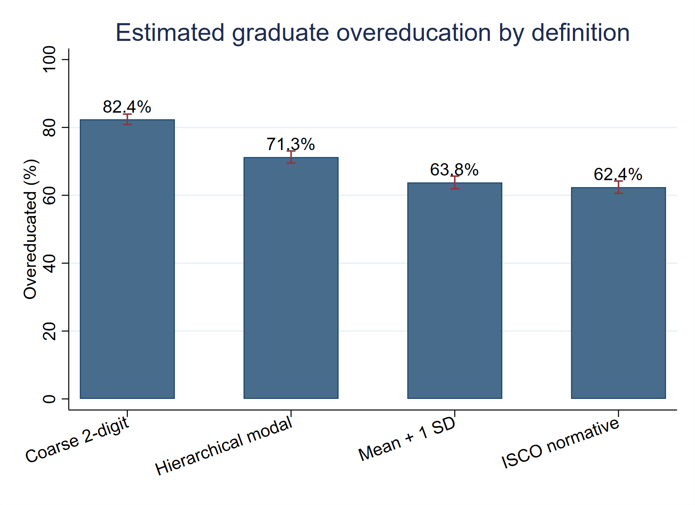
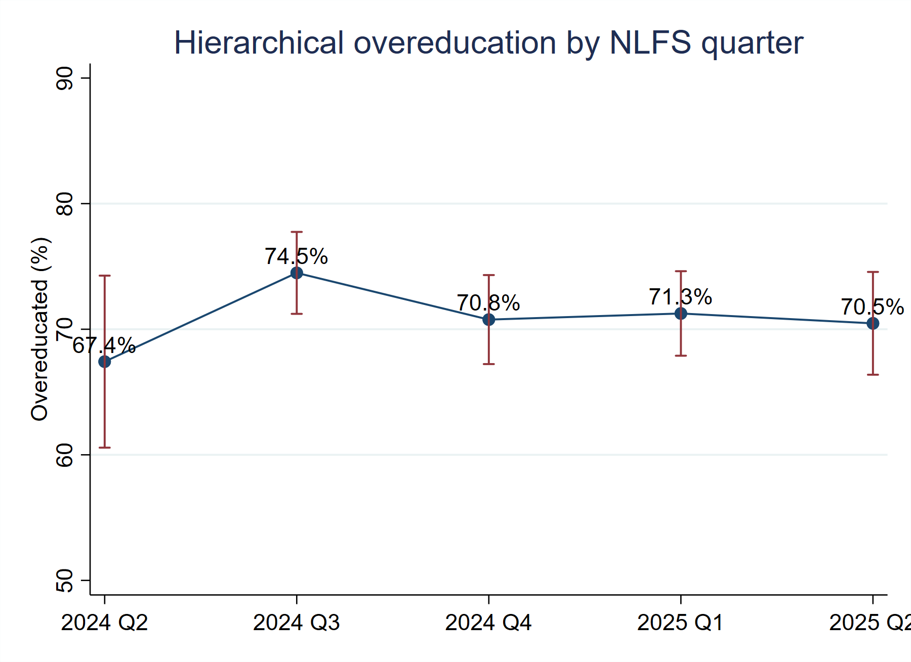
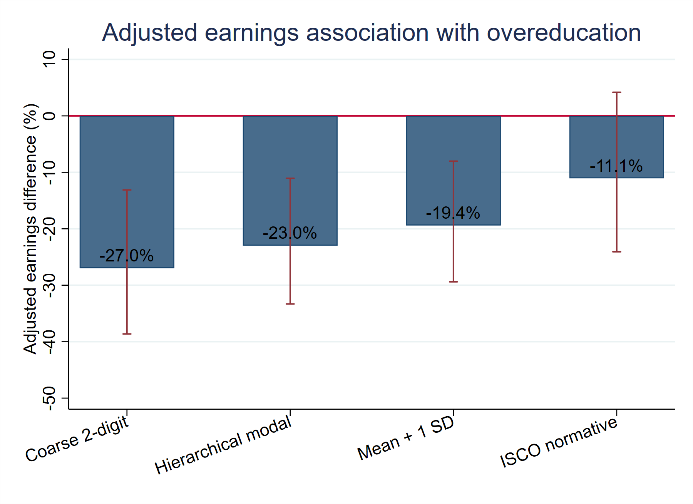

Overview
A graduate can be employed and still be in a job whose typical qualification level is below theirs. The Nigerian data suggest that this is not a marginal issue.
Why this question matters
Graduate unemployment is only one part of the labour-market story. A second question is whether people who already have jobs are doing work that usually requires their level of education. That matters because education is an investment made by households, students and the wider economy. If graduates are routinely absorbed into jobs with lower qualification benchmarks, the problem is not simply whether people are working. It is whether the labour market is allocating human capital efficiently.
Recent research makes one warning especially clear: 'overeducation' is not a direct measure of unused skill. A worker can have more formal education than the usual worker in an occupation and still use valuable skills on the job. Education mismatch and skill mismatch overlap, but they are not the same phenomenon (Flisi et al., 2017). For that reason, I describe the Nigerian result as qualification mismatch and use several benchmarks instead of presenting one percentage as the truth.
What I measured
I combined the individual public-use Nigeria Labour Force Survey files for Q2 2024, Q3 2024, Q4 2024, Q1 2025 and Q2 2025. The five files are treated as repeated cross-sections, not as a panel. The pooled data are used to construct occupational education benchmarks and to estimate mismatch prevalence across quarters. The core sample contains 5,443 employed Nigerians aged 15 or older with a BA/BSc/HND or higher qualification and a usable ISCO occupation code.
Four definitions of overeducation are used. The coarse realised-matches measure compares a graduate's education with the population-weighted modal education in the pooled two-digit occupation. The main hierarchical measure starts with the four-digit occupation and uses its weighted modal education when at least 30 workers are available, otherwise falling back to the three-, two- and one-digit occupation. A third definition uses the occupation's weighted mean years of education plus one standard deviation, and the fourth compares the graduate's qualification with the normative ISCO-08 skill level. Using several definitions is deliberate because mismatch estimates are sensitive to the benchmark used.
The prevalence estimates are population-weighted. Their confidence intervals are generated from intercept-only probability-weighted regressions with standard errors clustered by the public-use PSU. The same procedure is used to estimate the hierarchical rate separately by quarter and for the sex and urban/rural subgroups.
Methodology and model specification
The analysis uses four regression components in addition to the descriptive prevalence estimates. First, the correlates of hierarchical overeducation are estimated with a probability-weighted binomial generalized linear model with a logit link and PSU-clustered robust standard errors:
log[p_i / (1 - p_i)] = α + β₁AGE_i + β₂AGE_i² + β₃FEMALE_i + β₄URBAN_i + quarter effects + zone effects
This is the model actually implemented in Stata with glm, family(binomial) and link(logit). It is therefore a survey-weighted clustered binomial-logit model rather than a separate GEE estimator. The coefficients describe conditional associations between observed characteristics and the probability of hierarchical overeducation.
Second, the main earnings analysis uses 722 paid graduate employees with exact Q1-Q2 2025 earnings. Four otherwise identical log-earnings regressions are run, one for each mismatch definition:
ln(W_i) = α + βM_i + θEDUYRS_i + age controls + sex + urban + quarter FE + state FE + industry FE + ε_i
The equations use the NLFS population weight and PSU-clustered standard errors. The reported earnings association is 100[exp(β) - 1], so the mismatch coefficient is shown as the percentage earnings difference associated with overeducation after the included controls. Two additional checks add broad occupation-major fixed effects and, separately, remove undereducated graduates.
Third, a supporting ORU model is estimated for 2,590 paid workers. It separates total schooling into required, surplus and deficit years:
ln(W_i) = α + β_RR_i + β_OO_i + β_UU_i + ρ₁EXP10_i + ρ₂EXP10_i² + sex + urban + quarter FE + zone FE + industry FE + ε_i
Required schooling comes from the hierarchical occupation benchmark; surplus schooling is education above the requirement and deficit schooling is the shortfall below it. Potential experience is max(age - years of education - 6, 0), divided by 10 in the fitted equation. The model is probability-weighted with PSU-clustered robust standard errors, and a Wald test compares the required- and surplus-education coefficients.
Finally, the 2024 earnings categories are not converted to assumed midpoint wages. An interval-regression robustness model uses their lower and upper log-earnings bounds, combines them with exact 2025 earnings, and estimates the hierarchical overeducation association on 2,361 observations using Stata intreg with the population weight, PSU-clustered robust covariance, and quarter, zone and industry fixed effects. These models describe conditional associations; they do not establish that mismatch itself causes the earnings differences.
The headline result: about 62% to 82% of employed graduates, depending on the benchmark
Every definition produces a high mismatch estimate among employed graduates, but the level changes sharply. Among employed graduates, the broad two-digit realised-match measure gives 82.4%. The more occupation-granular hierarchical measure gives 71.3%. The mean-plus-one-standard-deviation rule gives 63.8%, while the normative ISCO benchmark gives 62.4%. The best summary is therefore not that 'exactly X percent' of all Nigerian graduates are overeducated. It is that qualification mismatch appears widespread among employed graduates, and the measured size depends on what counts as an occupational requirement.
| Definition | Overeducated share | 95% CI | N |
|---|---|---|---|
| Coarse 2-digit | 82.4% | 80.9% to 83.9% | 5,443 |
| Hierarchical modal | 71.3% | 69.5% to 73.1% | 5,443 |
| Hierarchical mean + 1 SD | 63.8% | 61.9% to 65.6% | 5,443 |
| ISCO-08 normative | 62.4% | 60.6% to 64.2% | 5,443 |
Source: Author's calculations from NBS NLFS Q2 2024–Q2 2025 public-use microdata.

Source: Author's calculations from NBS NLFS Q2 2024–Q2 2025 public-use microdata.
Why does the number move so much? Broad occupation groups combine jobs with different qualification patterns. A four-digit occupation is often more precise than a two-digit category, but the data are not always large enough to use that detail safely. A normative ISCO benchmark answers a different question again because it asks what skill level the occupational classification associates with the job, not what qualifications workers in Nigeria actually bring to that occupation. Research using PIAAC reaches the same conclusion: education-based and skill-based measures are related, but they are not interchangeable (Pellizzari & Fichen, 2017).
The result stays high across all five quarters
Under the hierarchical benchmark, the estimate is 67.4% in Q2 2024, rises to 74.5% in Q3, and then remains around 70% to 71% through Q2 2025. Five quarters are too short for a long-run trend claim, but the pattern matters because the pooled estimate is not being driven by one unusual survey round.
| Quarter | Overeducated share | 95% CI | N |
|---|---|---|---|
| 2024 Q2 | 67.4% | 60.6% to 74.3% | 697 |
| 2024 Q3 | 74.5% | 71.2% to 77.7% | 1,253 |
| 2024 Q4 | 70.8% | 67.2% to 74.3% | 1,240 |
| 2025 Q1 | 71.3% | 67.9% to 74.6% | 1,167 |
| 2025 Q2 | 70.5% | 66.4% to 74.6% | 1,086 |
Source: Author's calculations from NBS NLFS public-use microdata.

Source: Author's calculations from NBS NLFS public-use microdata.
The subgroup estimates are also suggestive without being causal. The hierarchical rate is about 73.2% for women and 70.2% for men, and 76.2% in rural areas compared with 70.5% in urban areas. In the adjusted binary model, urban residence is associated with lower odds of mismatch, while the female indicator is not statistically distinguishable from zero after the included controls. These patterns are better read as clues about where jobs are located and how occupations are distributed than as direct effects of gender or residence.
Occupation detail makes the result easier to understand
The mismatch rate is not equally high everywhere. Graduate stall and market salespersons are classified as overeducated because the occupation's modal qualification lies below degree level. Secondary-school teachers and accountants are mostly matched under the detailed benchmark. The point is not that one occupation is more valuable than another; it is that the formal education brought by graduates is very different from the qualification pattern normally observed inside those jobs.
| Occupation | Sample N | Overeducated share | Required rank |
|---|---|---|---|
| Stall and Market Salespersons | 735 | 100.0% | 3 |
| Secondary Education Teachers | 527 | 6.3% | 5 |
| Primary School Teachers | 341 | 100.0% | 4 |
| Field Crop and Vegetable Growers | 258 | 100.0% | 3 |
| Administrative and Executive Secretaries | 247 | 9.8% | 5 |
| Accountants | 160 | 16.3% | 5 |
| Mixed Crop Growers | 157 | 100.0% | 3 |
| Tailors, Dressmakers, Furriers and Hatters | 128 | 100.0% | 3 |
| Religious Professionals | 121 | 100.0% | 3 |
| University and Higher Education Teachers | 135 | 36.4% | 6 |
Note: Hierarchical realised-matches measure. Required rank is the occupation's weighted modal education rank. Source: Author's calculations from NBS NLFS Q2 2024–Q2 2025 public-use microdata.
The pay result is negative, but it is also definition-sensitive
For earnings, I use Q1 and Q2 2025 because those quarters contain exact reported earnings. After converting pay to monthly equivalents, the models control for education, age, sex, urban residence, quarter, state and industry and use survey weights with clustered standard errors.
The broad two-digit mismatch definition is associated with about 27.0% lower earnings. The hierarchical modal definition gives about 23.0% lower earnings, while the mean-plus-one-standard-deviation definition gives about 19.4% lower earnings. The normative ISCO estimate is smaller, about -11.1%, and statistically uncertain.
The direction of the first three estimates is consistent with many recent studies. De Santis et al. (2022) find a wage penalty among recent economics graduates, while Ragoobur (2022) reports a negative mismatch association in Mauritius that becomes larger under instrumental-variable estimation. Ghana and Kenya offer a useful reminder that this relationship is not universal: the wage ordering of matched and overeducated workers changes across groups and job-search conditions (Carmichael et al., 2021).
| Definition | Adjusted difference | 95% CI | p-value | N |
|---|---|---|---|---|
| Coarse 2-digit | -27.0% | -38.6% to -13.1% | <0.001 | 722 |
| Hierarchical modal | -23.0% | -33.3% to -11.1% | <0.001 | 722 |
| Hierarchical mean + 1 SD | -19.4% | -29.4% to -8.0% | 0.001 | 722 |
| ISCO-08 normative | -11.1% | -24.1% to 4.2% | 0.146 | 722 |
Note: Dependent variable is log monthly-equivalent earnings. Estimates are associations, not causal effects. Source: Author's calculations from NBS NLFS Q1–Q2 2025 exact-earnings microdata.

Source: Author's calculations from NBS NLFS Q1–Q2 2025 exact-earnings microdata.
Education above the benchmark is not worthless
The supporting ORU model is useful because it separates education that an occupation appears to require from education above or below that requirement. One required year-equivalent is associated with roughly 14.8% higher earnings, while one surplus year is associated with about 12.6% higher earnings. A Wald test comparing the two coefficients gives F(1, 934) = 3.40, p = .0655. Because the p-value exceeds .05, the difference is not statistically significant at the conventional 5% level. The point estimates therefore suggest a larger association for required education, but they do not establish that required schooling is rewarded more strongly than surplus schooling. Ghanaian evidence similarly distinguishes required from surplus education (Darko & Abrokwa, 2020).
| Term | Log coefficient | Approx. % association | p-value |
|---|---|---|---|
| Required education | 0.138 | 14.8% | <0.001 |
| Surplus education | 0.118 | 12.6% | <0.001 |
| Deficit education | -0.043 | -4.2% | <0.001 |
| Female | -0.331 | -28.2% | <0.001 |
| Urban | 0.045 | 4.6% | 0.405 |
Note: Paid-worker sample, N = 2,590. Wald test of H0: beta_R = beta_O: F(1, 934) = 3.40, p = .0655; equality is not rejected at the 5% level. The model separates required, surplus and deficit education. Source: Author's calculations from NBS NLFS Q1-Q2 2025.
What the wider evidence adds
The Nigerian result sits inside a broader pattern, but not a perfectly uniform one. Across ten African countries, Morsy and Mukasa (2021) find that mismatch is shaped by education, background, field of study and job quality, with undereducation and underskilling also important. In Mozambique, Jones et al. (2024) show that weak employment quality and poor match explain a large part of the gap between what graduates expected to earn and what they actually earned.
Longitudinal evidence also suggests that the first job can matter beyond the first year. Meroni and Vera-Toscano (2017) find that early overeducation raises the probability of remaining mismatched later. Eguía et al. (2023) find evidence of wage scarring among young graduates who begin their careers overeducated. Those studies cannot be directly transferred to Nigeria, but they explain why the quality of graduate entry jobs deserves attention.
At the same time, richer data often reduce simple interpretations. Sellami et al. (2017) show that unobserved heterogeneity and measurement error can change the estimated penalty, which is why the Nigerian regressions should not be read as the causal effect of taking a mismatched job. The analysis is strongest as evidence of a robust association under several statistical definitions.
What the result does not mean
It does not mean that universities are necessarily teaching the wrong things. Qualification mismatch is not a direct skills test. It does not mean that all graduates in below-benchmark occupations are wasting every skill they learned. It does not mean that the earnings gap is caused entirely by mismatch. And it does not mean that one international benchmark should replace Nigerian occupational evidence. Those distinctions matter because the policy response depends on the diagnosis.
The policy question is partly about jobs, not just education
If graduate supply expands while professional, technical and higher-productivity jobs grow more slowly, some mismatch can persist even when education quality improves. The response therefore cannot stop at curriculum reform. Nigeria also needs firms and sectors capable of absorbing tertiary-educated workers into higher-productivity work.
Better labour-market information is part of that infrastructure. Universities and public employment institutions can improve career guidance, internships, vacancy information and graduate destination tracking. Research on labour-market entry shows that macroeconomic conditions and early job placement can influence later mismatch, which makes school-to-work institutions part of the solution rather than an optional add-on (Summerfield & Theodossiou, 2017).
The data system can also improve. Future NLFS or graduate-tracer instruments would be more useful if they consistently captured field of study, direct skill use, digital capabilities and detailed tasks. That would allow researchers to separate 'too much formal education for the occupation' from 'the wrong field' and from genuine skill underutilisation.
Bottom line
The data do not support one magic number. They support a more careful conclusion: qualification mismatch among employed graduates in Nigeria appears substantial, and its exact measured size depends on how job requirements are defined. Under the most occupation-granular statistical benchmark used here, about seven in ten employed Degree/HND+ workers are classified as overeducated. In the 2025 paid-graduate sample, statistical definitions of mismatch are also associated with materially lower earnings. The ORU point estimate for required education is larger than that for surplus education, but the Wald test does not show a statistically significant difference at the 5% level. That is enough to make graduate job quality, occupational matching and the demand for skilled work central parts of Nigeria's employment debate.
Data and method note
The complete analysis contains 214,854 person-quarter records across five NLFS quarters. The core mismatch sample has 5,443 Degree/HND+ workers with valid occupation codes; the exact-earnings graduate sample has 722 observations; the broader ORU sample has 2,590 paid workers; and the all-quarter interval sample has 2,361 observations. All main estimates use the NLFS probability weight and PSU-clustered robust inference. The prevalence statistics are weighted proportions; the overeducation-correlates model is a binomial-logit GLM; the exact-earnings and ORU models are weighted log-linear regressions; and the all-quarter robustness check is an interval regression that preserves the 2024 earnings bands. The empirical results are interpreted as associations, not causal effects.
Selected sources
Carmichael, F., Darko, C., & Kanji, S. (2021). Wage effects of educational mismatch and job search in Ghana and Kenya. Education Economics, 29(4), 359–378. https://doi.org/10.1080/09645292.2021.1900790
Darko, C. K., & Abrokwa, K. K. (2020). Do you really need it? Educational mismatch and earnings in Ghana. Review of Development Economics, 24(4), 1365–1392. https://doi.org/10.1111/rode.12681
De Santis, M. O., Gáname, M. C., & Moncarz, P. E. (2022). The impact of overeducation on wages of recent economic sciences graduates. Social Indicators Research, 163(1), 409–445. https://doi.org/10.1007/s11205-022-02905-w
Eguía, B., Rodríguez, C., & Serrano, F. (2023). Overeducation and scarring effects on the wages of young graduates. International Journal of Manpower, 44(4), 755–771. https://doi.org/10.1108/IJM-02-2022-0075
Flisi, S., Goglio, V., Meroni, E. C., Rodrigues, M., & Vera-Toscano, E. (2017). Measuring occupational mismatch: Overeducation and overskill in Europe—Evidence from PIAAC. Social Indicators Research, 131, 1211–1249. https://doi.org/10.1007/s11205-016-1292-7
Jones, S., Santos, R., & Xirinda, G. (2024). Employment mismatches drive expectational earnings errors among Mozambican graduates. The World Bank Economic Review, 38(1), 51–73. https://doi.org/10.1093/wber/lhad018
McGuinness, S., Pouliakas, K., & Redmond, P. (2018). Skills mismatch: Concepts, measurement and policy approaches. Journal of Economic Surveys, 32(4), 985–1015. https://doi.org/10.1111/joes.12254
Meroni, E. C., & Vera-Toscano, E. (2017). The persistence of overeducation among recent graduates. Labour Economics, 48, 120–143. https://doi.org/10.1016/j.labeco.2017.07.002
Morsy, H., & Mukasa, A. N. (2021). ‘Mind the mismatch?’ Incidence, drivers, and persistence of African youths’ skill and educational mismatches. African Development Review, 32(S1), S5–S19. https://doi.org/10.1111/1467-8268.12478
Pellizzari, M., & Fichen, A. (2017). A new measure of skill mismatch: Theory and evidence from PIAAC. IZA Journal of Labor Economics, 6, 1. https://doi.org/10.1186/s40172-016-0051-y
Ragoobur, V. T. (2022). Education mismatch and wages in Mauritius: Premium or penalty. Review of Economics, 73(2), 103–129. https://doi.org/10.1515/roe-2021-0036
Sellami, S., Verhaest, D., Nonneman, W., & Van Trier, W. (2017). The impact of educational mismatches on wages: The influence of measurement error and unobserved heterogeneity. The B.E. Journal of Economic Analysis & Policy, 17(1). https://doi.org/10.1515/bejeap-2016-0055
Summerfield, F., & Theodossiou, I. (2017). The effects of macroeconomic conditions at graduation on overeducation. Economic Inquiry, 55(3), 1370–1387. https://doi.org/10.1111/ecin.12446
International Labour Office. (2012). International Standard Classification of Occupations: ISCO-08. Volume I: Structure, group definitions and correspondence tables. International Labour Office. https://www.ilo.org/publications/international-standard-classification-occupations-2008-isco-08-structure
National Bureau of Statistics. (2024a). Nigeria Labour Force Survey (NLFS), 2024: Survey methodology. National Bureau of Statistics. https://microdata.nigerianstat.gov.ng/index.php/catalog/152/related-materials
National Bureau of Statistics. (2026). Nigeria Labour Force Survey (Q2 2024–Q2 2025): Microdata catalogue and data dictionary. National Bureau of Statistics. https://microdata.nigerianstat.gov.ng/index.php/catalog/152